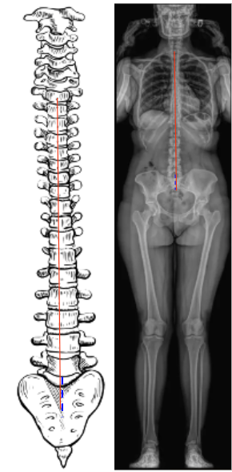

1) Description of Measurement
Trunk Shift quantifies the lateral displacement of the trunk relative to the pelvis in the coronal plane. It is defined as the horizontal distance between the C7 plumb line (C7PL) and either the Central Sacral Vertical Line (CSVL) or the midpoint of the sacrum on a standing full-length spinal radiograph.
This parameter evaluates global coronal balance and complements the Cobb Angle and Coronal Balance in assessing scoliosis or spinal deformity. An increased trunk shift indicates coronal decompensation, in which the head and thorax are not properly centered over the pelvis.
2) Instructions to Measure
3) Normal vs. Pathologic Ranges
Key point:
A trunk shift > 20 mm is generally considered clinically significant coronal imbalance, often used as a radiographic criterion for decompensated scoliosis.
4) Important References
Wu W, Chen Y, Yu L, Li F, Guo W. Coronal and sagittal spinal alignment in lumbar disc herniation with scoliosis and trunk shift. J Orthop Surg Res. 2019 Aug 20;14(1):264. doi: 10.1186/s13018-019-1300-0.
Schwab F, Lafage V, Boyce R, Skalli W, Farcy JP. Gravity line analysis in adult volunteers: age-related correlation with spinal parameters, pelvic parameters, and foot position. Spine (Phila Pa 1976). 2006 Dec 1;31(25):E959-67. doi: 10.1097/01.brs.0000248126.96737.0f.
O’Brien MF, Kuklo TR, Blanke KM, Lenke LG. Radiographic Measurement Manual. Memphis: Medtronic Sofamor Danek USA; 2008.
Burkhardt BW, Meyer C, Wagenpfeil G, et al. The Effect of Cervicodorsal Hemivertebra Resection on Head Tilt and Trunk Shift in Children With Congenital Scoliosis. J Pediatr Orthop. 2020 Apr;40(4):e256-e265. doi: 10.1097/BPO.0000000000001506.
Lafage V, Schwab F, Skalli W, et al. Standing balance and sagittal plane spinal deformity: analysis of spinopelvic and gravity line parameters. Spine (Phila Pa 1976). 2008 Jun 15;33(14):1572-8. doi: 10.1097/BRS.0b013e31817886a2.
5) Other info....
Trunk shift reflects overall coronal compensation—whether the spine has re-centered over the pelvis despite curvature.
A positive shift (C7PL lateral to CSVL) indicates decompensation toward the curve’s convexity; negative indicates compensation toward concavity.
Postoperative trunk shift > 20 mm may correlate with shoulder asymmetry, rib prominence, or residual imbalance.
Often measured alongside Cobb angle and Apical Vertebral Translation (AVT) to assess both angular and translational deformity components.
Pre- and postoperative comparisons are useful for determining surgical effectiveness and postoperative balance restoration.
Low-dose EOS or stitched long-cassette standing films are preferred for precise measurement across the entire spine and pelvis.
Always report direction and magnitude (e.g., “Trunk shifted 25 mm to the right”).